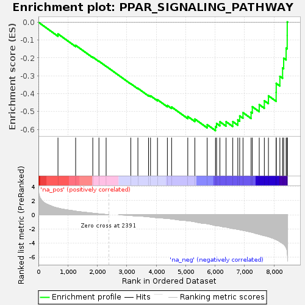
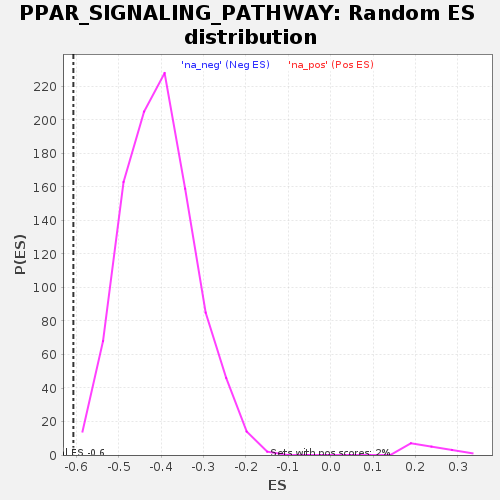

| | | Dataset | deres_notadjust |
| Phenotype | NoPhenotypeAvailable |
| Upregulated in class | na_neg |
| GeneSet | PPAR_SIGNALING_PATHWAY |
| Enrichment Score (ES) | -0.6069786 |
| Normalized Enrichment Score (NES) | -1.4996 |
| Nominal p-value | 0.0020325202 |
| FDR q-value | 0.6707881 |
| FWER p-Value | 0.48 |
Table: GSEA Results Summary

Fig 1: Enrichment plot: PPAR_SIGNALING_PATHWAY
Profile of the Running ES Score & Positions of GeneSet Members on the Rank Ordered List
| SYMBOL | RANK IN GENE LIST | RANK METRIC SCORE | RUNNING ES | CORE ENRICHMENT | | 1 | SLC27A5 | 664 | 0.943 | -0.0655 | No |
| 2 | DBI | 1264 | 0.497 | -0.1295 | No |
| 3 | SLC27A1 | 1846 | 0.214 | -0.1955 | No |
| 4 | ACSL3 | 2055 | 0.123 | -0.2184 | No |
| 5 | ACADM | 2299 | 0.034 | -0.2467 | No |
| 6 | CPT1A | 3137 | -0.111 | -0.3445 | No |
| 7 | HMGCS2 | 3378 | -0.194 | -0.3702 | No |
| 8 | PPARD | 3739 | -0.292 | -0.4088 | No |
| 9 | UBC | 3807 | -0.323 | -0.4122 | No |
| 10 | SCP2 | 4043 | -0.432 | -0.4340 | No |
| 11 | PLIN2 | 4379 | -0.532 | -0.4662 | No |
| 12 | ACSL4 | 4523 | -0.595 | -0.4748 | No |
| 13 | FADS2 | 5072 | -0.848 | -0.5279 | No |
| 14 | NR1H3 | 5312 | -1.005 | -0.5420 | No |
| 15 | SLC27A4 | 5731 | -1.276 | -0.5736 | No |
| 16 | FABP5 | 6013 | -1.558 | -0.5850 | Yes |
| 17 | PPARA | 6050 | -1.584 | -0.5669 | Yes |
| 18 | LPL | 6163 | -1.618 | -0.5574 | Yes |
| 19 | PDPK1 | 6372 | -1.774 | -0.5571 | Yes |
| 20 | ACAA1 | 6600 | -1.956 | -0.5564 | Yes |
| 21 | CD36 | 6771 | -2.086 | -0.5472 | Yes |
| 22 | SORBS1 | 6835 | -2.133 | -0.5246 | Yes |
| 23 | ACSL1 | 6948 | -2.230 | -0.5064 | Yes |
| 24 | ANGPTL4 | 7222 | -2.475 | -0.5039 | Yes |
| 25 | RXRA | 7264 | -2.521 | -0.4732 | Yes |
| 26 | ILK | 7499 | -2.808 | -0.4614 | Yes |
| 27 | PPARG | 7672 | -2.982 | -0.4398 | Yes |
| 28 | ACOX1 | 7811 | -3.128 | -0.4120 | Yes |
| 29 | FABP4 | 8073 | -3.559 | -0.3928 | Yes |
| 30 | ME1 | 8076 | -3.573 | -0.3427 | Yes |
| 31 | PLIN5 | 8200 | -3.844 | -0.3030 | Yes |
| 32 | ADIPOQ | 8292 | -4.088 | -0.2562 | Yes |
| 33 | SCD | 8329 | -4.193 | -0.2014 | Yes |
| 34 | AQP7 | 8412 | -4.682 | -0.1451 | Yes |
| 35 | PLIN1 | 8449 | -5.334 | -0.0741 | Yes |
| 36 | PLIN4 | 8450 | -5.374 | 0.0017 | Yes |
Table: GSEA details [plain text format]

Fig 2: PPAR_SIGNALING_PATHWAY: Random ES distribution
Gene set null distribution of ES for PPAR_SIGNALING_PATHWAY